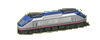

| Новости |
|
Поддержка браузера Opera - 2 Июня 2006
|
Теперь наш сайт можно обозревать не только в родном для Windows браузере Internet Explorer, но и в альтернативном браузере Opera,
который превосходит встроенного IE по возможностям и удобству в разы.
Внимание! Возможны некоторые недочёты на веб-странице (например, слишком близкое расположение текста к линиям), но это уже
проблема не браузера, а бесплатного хостинга, на котором находится наш сайт. Хостинг, к сожалению, не всегда своевременно
обновляет файлы сайта.
|
|
Раздел с картами - 19 Апреля 2006
|
В разделе Downloads появился раздел с картами, созданными игроками. Сейчас в разделе уже 5 карт.
Не смотря на долгое затишье, после которого большая часть fan-сайтов об игре 'Transport Giant' уже успела исчезнуть из всемирной паутины, наш сайт продолжает работать и можем заверить Вас, мы никуда не собираемся исчезать :)
|
|
Обновление МОДов - 7 Ноября 2005
|
Произошло большое обновление модификаций, или просто МОДов, для игры. Появились новые разделы на сайте, отвечающие за новые МОДы.
Если вы сами являетесь автором собственных модификаций игры и хотите поделиться ими со всеми посетителями сайта,
присылайте их нам, пишите на форуме и обсуждайте их.
|
|
No-CD для 1.30 - 7 Ноября 2005
|
Приносим свои извинения за такую большую задержку в обновлении сайта. Были некоторые проблемы технического и другого плана.
За всё это время уже успел выйти кряк для патча 1.30, отучающий игру от диска, или, короче говоря noCD patch для Transport Giant v1.30
Качаем здесь.
|
|
Самодельные карты. - 13 Января 2005
|
Уже много времени прошло с выхода в свет редактора карт для "Транспортного Олигарха", многие уже наверное успели насладиться игрой на своих собственных картах.
Пришло время поделиться своими шедеврами с другими фанатами этой игры. На сайте стартует раздел, в котором будут вывешиваться созданные игроками карты.
Чтобы разместить вашу карту на нашем сайте вам достаточно прислать её по электронной почте,
в письме укажите тему "Карта для Транспортного Олигарха". Также желательно наличие какого-либо описания карты/сценария, которое будет доступно посетителям этого
сайта при просмотре информации о вашей карте.
Удачи вам! Ждём ваших карт!
|
|
Галерея зданий. - 2 Января 2005
|
С Новым 2005-ым Годом всех!!!
На сайте обновление. Теперь доступна галерея зданий.
|
|
Вышел редактор карт. - 15 Ноября 2004
|
|
|
8-го ноября официально вышла английская версия редактора карт для "Transport Giant"
("Транспортный Олигарх")
Скачать его и инструкцию к нему можно в разделе Downloads.
|
|
Статья о коэффициентах цен транспортировки. - 6 Ноября 2004
|
Пополнение в разделе статей.
Теперь доступна таблица коэффициентов цен транспортировки различных типов товаров.
|
|
Патч для игры версии 1.3 (1.30). - 30 Октября 2004
|
|
|
Совсем недавно вышел новый патч для "Transport Giant" версии 1.3 (1.30).
Патч поддерживает американускую, британскую, испанскую и французскую версии игры.
Его можно скачать в разделе Патчи/аддоны!
|
|
Новые разделы на сайте доступны. - 26 Октября 2004
|
Заработал раздел "Скриншоты" в "Галерее", "Winamp skins" в "Downloads" и появился раздел "MODs", в котором
будут находиться различные модификации игры.
Если у вас есть какие-либо интересные кадры из игры или просто полезная информация, пожалуйста
присылайте её нам на почту.
|
|
Обновление сайта. - 24 Октября 2004
|
Наш сайт перешёл на полностью новый дизайн.
Если вы не заметили изменений по сравнению со старым дизайном или остались некоторые
старые картинки (изображение автобуса), просто обновите страницу (в Internet Explorer нажмите Ctrl+F5).
Следите за дальнейшими обновлениями на сайте!
|
|
Небольшое обновление сайта. - 30 Сентября 2004
|
Теперь доступна страница "Промышленность" раздела "Игра".
На ней описывается роль транспорта и промышленности в игре и цель игры в целом.
|
|
Статья о семафорах на русском. - 29 Сентября 2004
|
На сайте появился перевод на русский язык статьи о семафорах с официального сайта игры.
Большое спасибо Владимиру (vov1515).
Также заработал раздел "Экономика" и "Транспорт". В ближайшем будущем заработает раздел "Промышленность",
а уже после него будут сделаны страницы раздела "Галерея".
|
|
Скоро выйдет русская версия патча 1.20 - 11 Сентября 2004
|
|
На следующей неделе компания "Акелла", официальный издатель игры в
России, обещает выпустить патч для игры "Транспортный Олигарх" (Transport Giant).
|
|
Дополнение "TransportGiant Down Under" - 3 Сентября 2004
|
|
|
Выход дополнения "TransportGiant Down Under" намечен на конец сентября 2004 года. Подробне о нём
можно прочитать на официальном сайте игры
(на английском языке).
|
|
Патч 1.20 (английский/французский/испанский) - 23 Августа 2004
|
|
|
Вышел патч версии 1.20 для игры "Transport Giant", или "Транспортный Олигарх" как она, наверное,
более известна в России. Патч содержит в себе все предыдущие версии патчей и исправляет
большое количество ошибок в игре. Также с новым патчем появились некоторые новые особенности.
Здесь можно прочитать об исправлениях и нововведениях в патче. А здесь можно
скачать патч 1.20
|
|
|